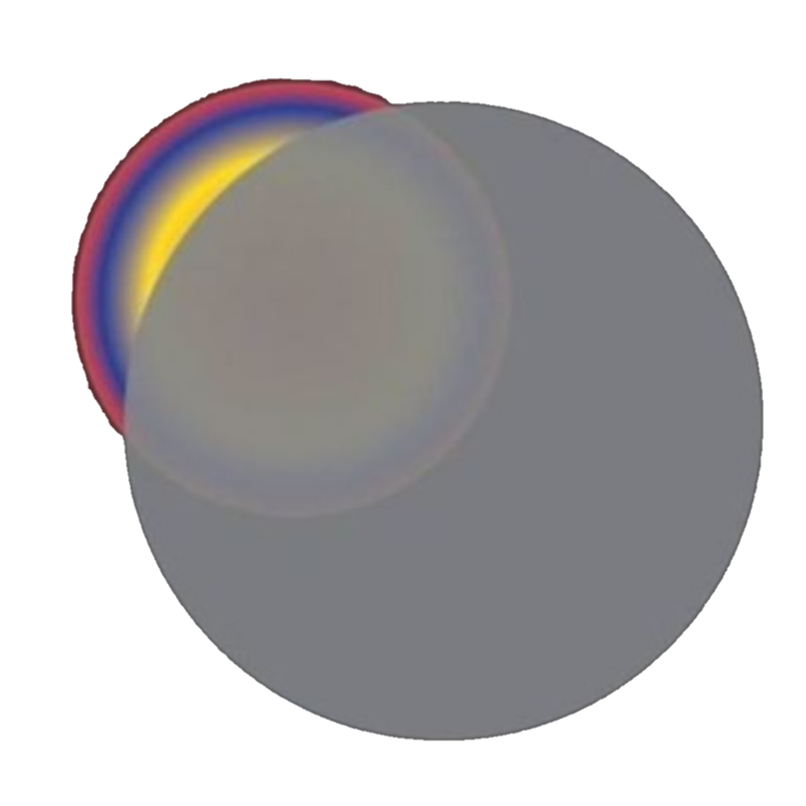

⎄Limin
alLo
op():
Loops in programming allow you to repeat a set of instructions until a certain condition is met, making it easier to perform repetitive tasks and iterate through data. They come in different forms like "for" and "while" loops.